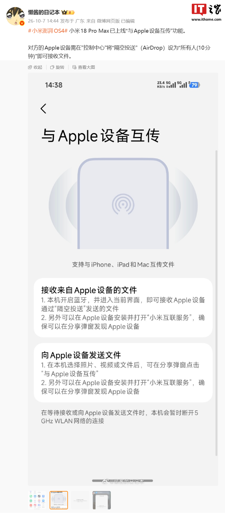
THE TECH EDIT
기술의 변화, 매일 한눈에.
카메라 · 스마트폰 · AI, 해외 테크 소식을 모아 전합니다.
최근 발행2026-10-08
새로 들어온 소식
LATEST STORIES
최신 뉴스
전체 3,514개 기사
OnePlus Ace 7 스마트폰 유출: 6.78인치 185Hz 디스플레이, 9000mAh 배터리, 2억 화소 메인 카메라
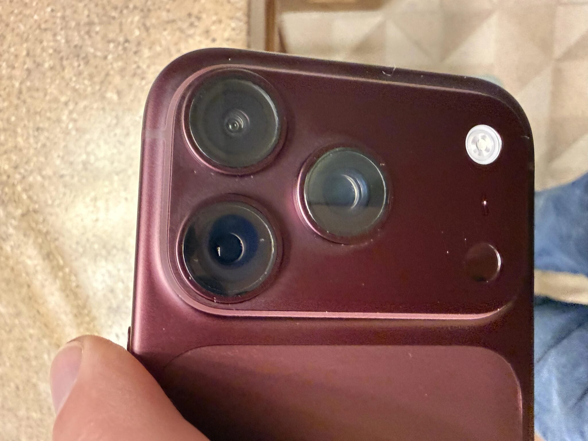
iPhone 18 Pro (버건디) 사용자들, 카메라 주변에서 이상한 변색 발견

Huawei 자체 개발 Wi-Fi 7+ 칩셋급 협업 기술, Mate 90 시리즈 스마트폰 등 신규 기기 지원
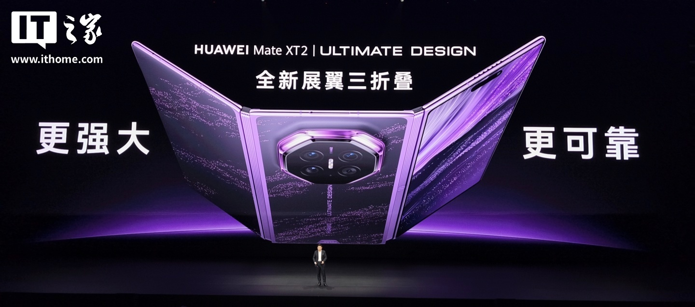
위청둥: Huawei Mate XT 2 삼중 폴더블 스마트폰 출하량 10만 대 육박, 총 판매량 100만 대 돌파 예상
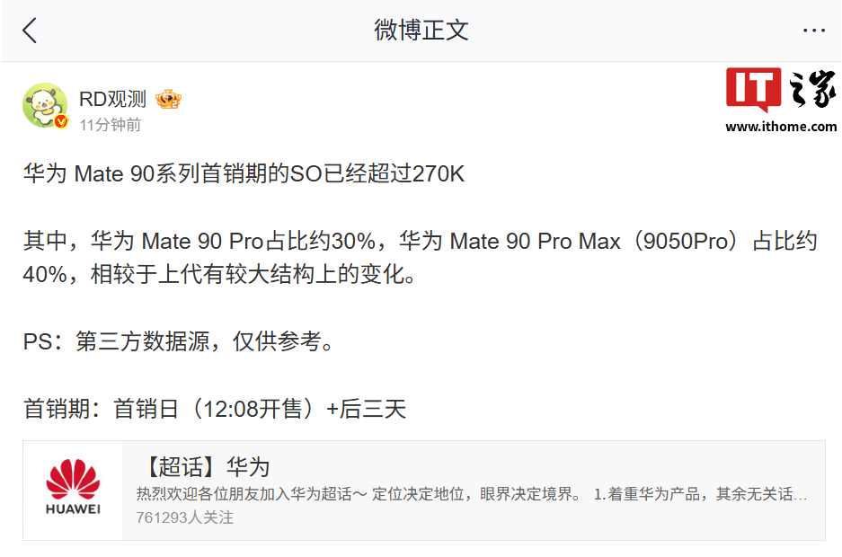
Huawei Mate 90 시리즈 스마트폰, 첫 판매 기간 동안 27만 대 이상 판매, Kirin 9050 Pro 버전 '울트라' 모델 약 40% 차지
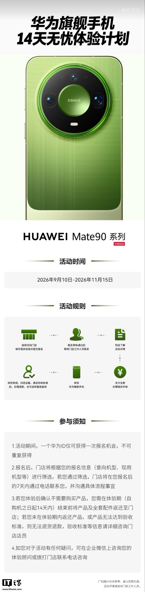
Huawei 플래그십 스마트폰 14일 안심 체험 프로그램 업데이트, Mate 90 표준/Pro 모델 추가
구글, 멀티모달 지원 임베딩 제마 2 출시: 7억 4천만 개 매개변수, 스마트폰에서 191MB 메모리로 실행 가능
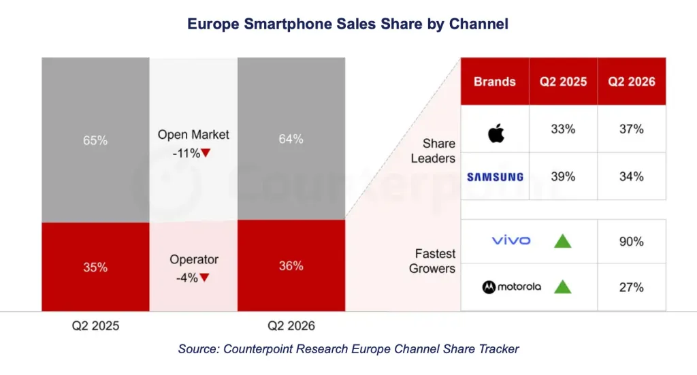
CounterPoint 보고서: 2026년 2분기 유럽 통신사 채널 스마트폰 판매량, Apple이 Samsung을 제치고 1위, vivo 90% 성장률로 최고 기록
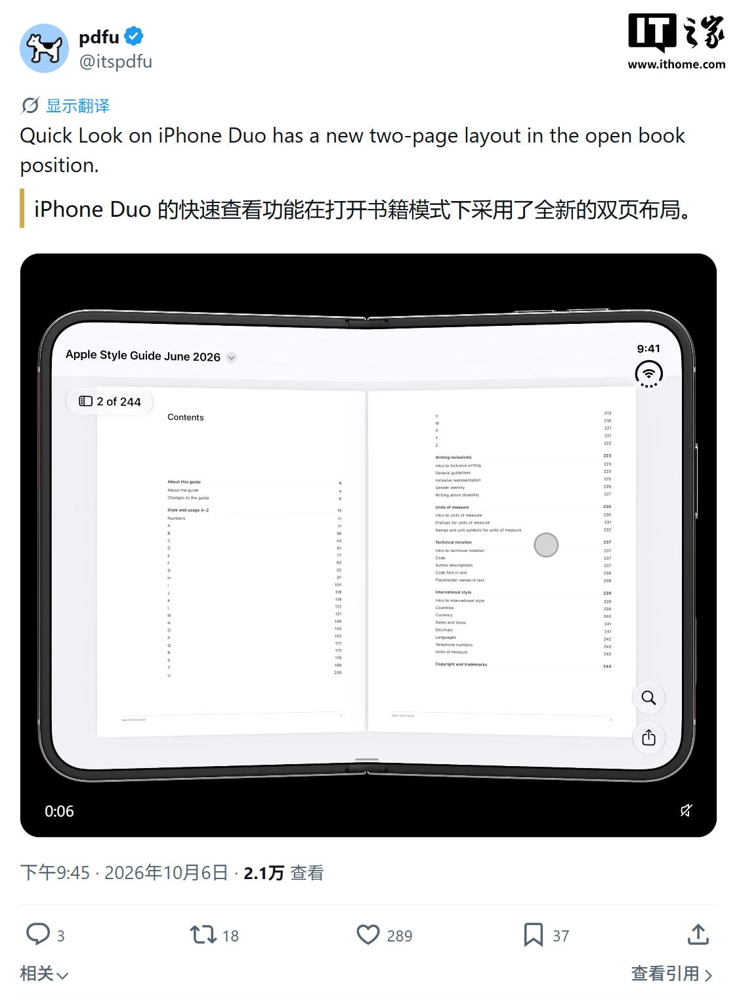
Apple 최초 폴더블 iPhone 듀오, 듀얼 페이지 PDF 모드 공개
화웨이 쉬즈쥔, "미국 기업들의 AI 개발 속도 늦추라는 요구"에 대해 "중국 모델은 더 약해서 오히려 속도를 높여야 한다. 그렇지 않으면 어떻게 위험을 경험할 수 있겠는가"라고 답변
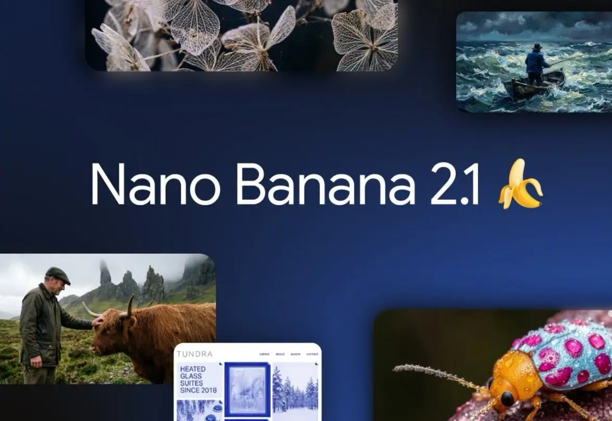
구글 AI 이미지 모델 나노 바나나 2.1 출시, 시각 디자인, 마스크 편집, 피사체 일관성 향상

위청둥, Huawei 스마트폰 "좋은 네트워크 구축" 상세 설명: 고속철도 영상 통화 끊김 90% 감소, Mate 90 시리즈 최초 적용

위청둥, Apple의 폴더블 디스플레이 시장 진출에 "경쟁에 동참하는 동료 환영한다" 응답, iPhone Duo 출시 후 Huawei Pura X Max 판매량 76% 급증
Sony 뮤직, 9월에 AI 위조곡 26만 곡 삭제 요청: 아델 등 아티스트 사칭, 3월 대비 요청량 거의 두 배 증가
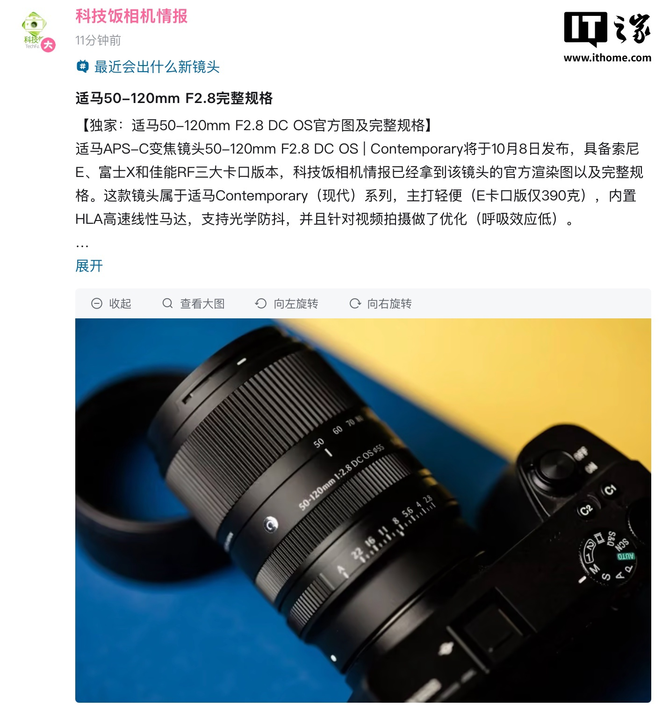
시그마 50-120mm F2.8 APS-C 카메라 렌즈 유출: 광학 손떨림 보정 지원, Sony E, Fujifilm X, Canon RF 마운트 커버
르네사스, AI 데이터센터 및 휴머노이드 로봇용 저전압 GaN 전력 반도체 첫 출시
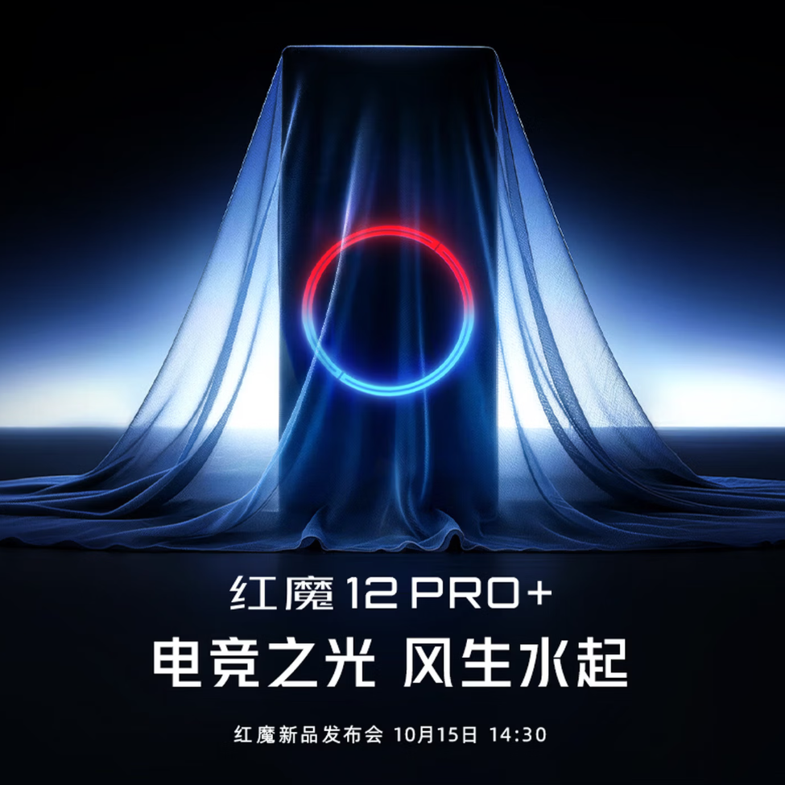
레드매직 12 Pro+ 스마트폰 신제품 예약 시작, 10월 15일 출시
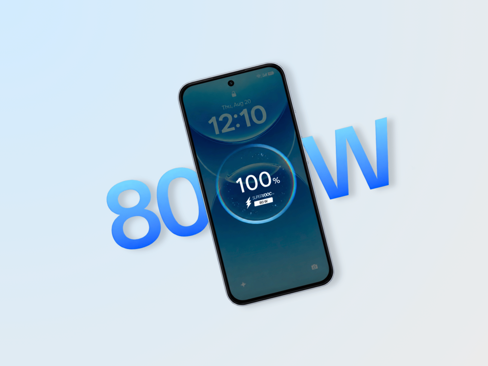
OPPO, F35 5G 시리즈 스마트폰 출시: 8000mAh 배터리, Dimensity 6360 Max/7360 Max 칩 탑재

iPhone이 순식간에 '카메라'로 변신, ShiftCam과 Apple이 협력하여 새로운 ProRig 세트 출시
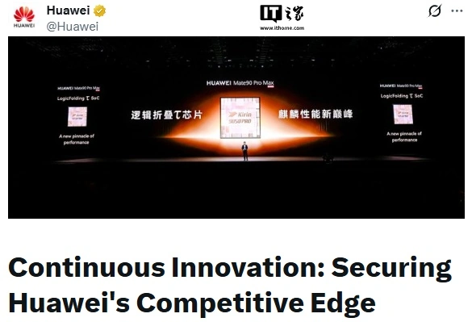
Huawei 위청둥, 메모리 압박 언급: 스마트폰 한 대당 200달러 비용 증가, 회사 생존 위해 가격 인상 불가피
Google Pixel 12 시리즈 스마트폰 공개: 폴드 폴더블 내부 디스플레이 해상도 2296x2404로 향상
검색 결과가 없습니다
다른 검색어를 입력하거나 필터를 초기화해 보세요.